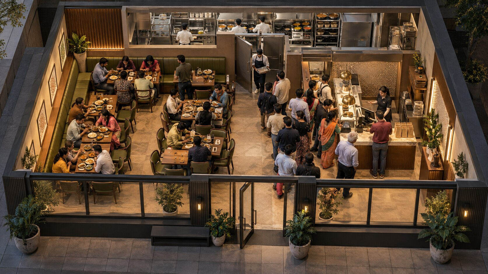
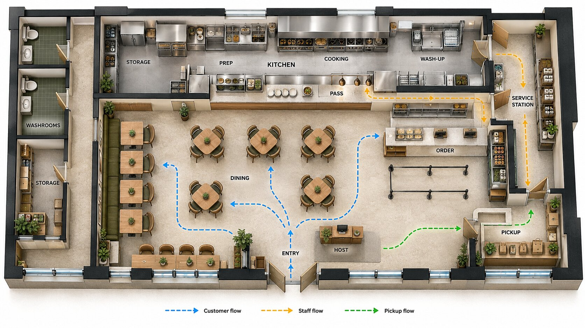
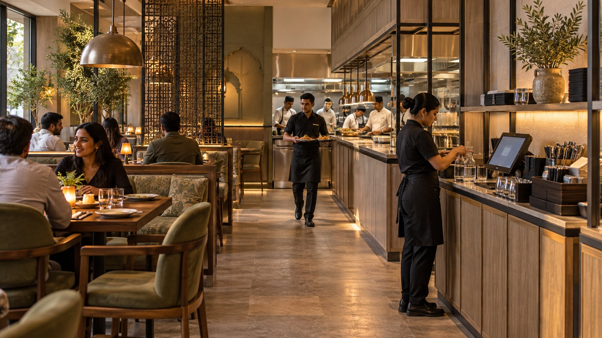
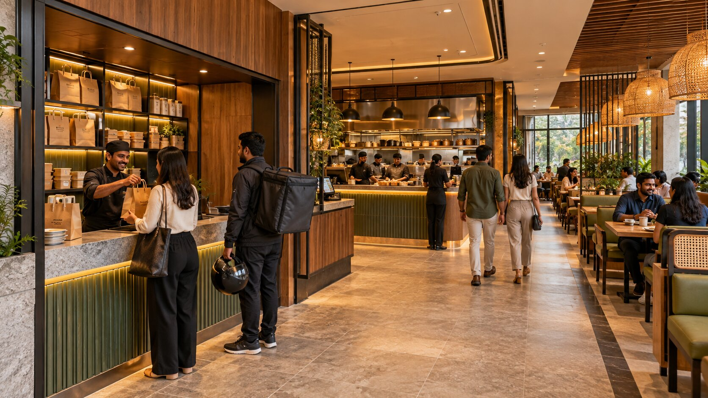
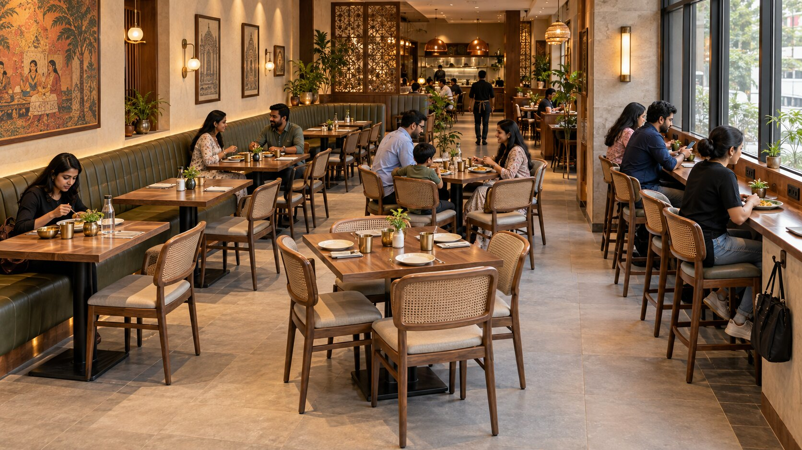
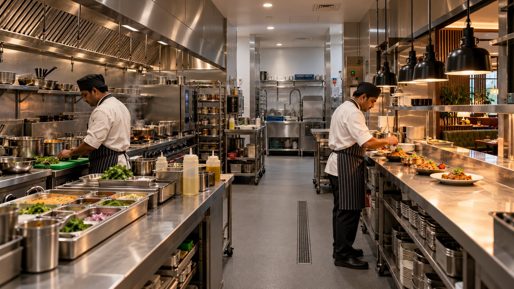

Close 

Before materials, colours or decorative lighting, a restaurant has to answer a more basic question: can guests and staff move through the space without fighting each other?
Restaurant layout planning connects the business model to the floor plan.
It determines how the kitchen relates to service, how customers enter and queue, where delivery pickup happens, how many seats feel comfortable, where staff restock from and whether the space can handle peak demand without becoming chaotic.
SprintCo plans F&B spaces around function, flow and customer experience first—then develops the design language around that operating logic.

Guests should be able to understand the space quickly: where to enter, order, sit, wash hands, find the restroom, collect takeaway and exit. Confusing movement creates queues in the wrong places and makes a small restaurant feel even smaller.
Servers, bussing staff and runners need short, repeatable paths between kitchen, service stations and tables. Every unnecessary crossing adds time and friction during peak periods.
Delivery riders and takeaway customers should not block dine-in guests or the cashier. A dedicated pickup point can protect both speed and ambience, especially for QSRs and delivery-heavy restaurants.

| Common conflict | Better planning principle |
|---|---|
| Kitchen door opens into customer queue | Create a separate service edge / route where possible |
| Delivery riders wait at the main host point | Provide a defined pickup zone |
| Staff cross guest circulation to reach wash-up | Rework BOH/service paths |
| Cashier queue blocks seating access | Move or reshape ordering line |
| Tables are added wherever they fit | Build seating around circulation and service clearances |
| Service station is an afterthought | Place stations where staff can restock without disrupting guests |


There is no responsible universal FOH-to-BOH percentage for every restaurant.
The correct split depends on the menu, equipment, service style, storage, delivery model, seating target and site shape.
A kitchen-heavy delivery concept may devote more area to production. A beverage-led café may prioritise front-of-house dwell space. A premium restaurant may need larger table spacing, waiting, bar or private-dining zones. The right ratio is the one that supports the operating model without wasting high-value floor area.

Flexible for couples and can often be combined for groups.
Useful for families and groups but can be inefficient if the audience is mostly solo/couple traffic.
Efficient along walls and useful for creating visual continuity, but they reduce future flexibility if overused.
Useful for cafés, high-energy formats and larger groups; require careful circulation and charging/service planning.
Can activate edges and increase capacity in narrow spaces while creating a different dwell behaviour.
Needs its own service, weather, furniture, lighting and access logic rather than being treated as “extra tables”.
The menu drives equipment. Equipment drives power, gas, ventilation, drainage and work zones. Those services affect the architecture. That chain is why the kitchen should not be pushed into whatever area remains after the dining plan is finished.
For cafés and smaller restaurants, counter workflow deserves the same rigour. SprintCo’s coffee-shop kitchen guidance emphasises defining the menu before equipment and services are frozen, because late changes are expensive. For tighter footprints, see our guide to small restaurant kitchen design.

| Format | Layout priorities |
|---|---|
| QSR | Queue, order, production, pickup, delivery, high turnover, repeatability |
| Café | Counter/barista workflow, product display, seating mix, laptop/charging behaviour |
| Casual dining | Comfortable seating, server routes, family/group flexibility, BOH support |
| Fine dining | Arrival sequence, privacy, service choreography, table spacing, acoustics |
| Bar / taproom | Bar ergonomics, standing/seated mix, server paths, acoustic zones, late-night circulation |
| Bakery / dessert | Display visibility, impulse path, queue, pickup and packaging workflow |
The best layout is the one that supports your menu, service model, customer type and site. There is no single plan that works for every restaurant.
It depends on production intensity, storage, equipment and service format. Avoid using a fixed percentage without first understanding the menu and workflow.
Often yes, through better zoning, table sizes, wall seating, circulation and service-station planning. The goal is productive density, not simply more chairs.
Not always, but it should have a defined flow. High delivery volumes benefit from pickup planning that avoids blocking dine-in guests and cashier queues.
As soon as the functional layout and kitchen/equipment direction become clear. Waiting until the interior concept is finished can create expensive redesign.